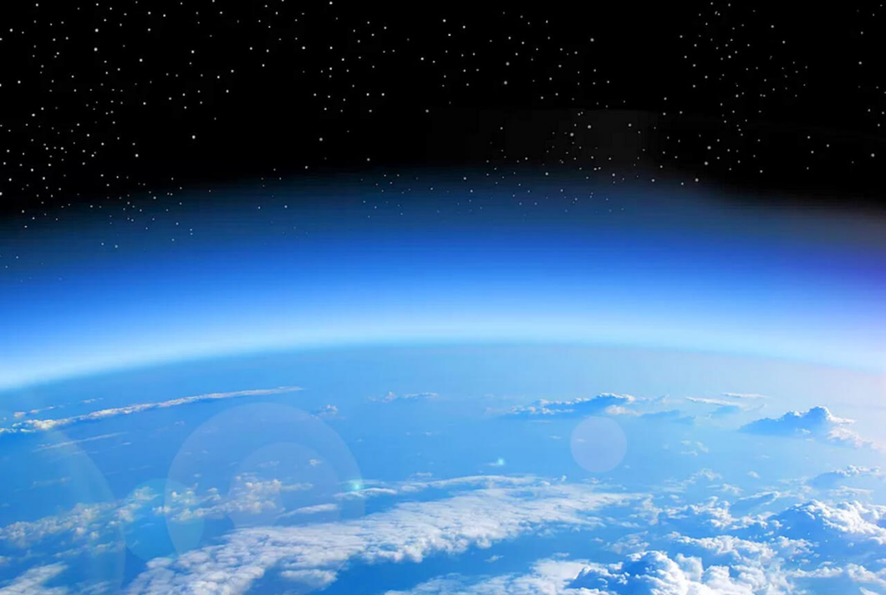

Nicolas Merouze
·
16 mai 2023
La limite de l'atmosphère
Mesurer l’épaisseur de notre atmosphère est complexe, car plus nous montons en altitude et moins nous avons air, alors où est la limite de notre belle atmosphère.
-
Certains scientifiques disent qu’elle se situe à 31 km : seuil en dessous duquel se trouve 99 % de la masse de l'atmosphère
-
Selon la Fédération d’aéronautique internationale, la limite entre l’atmosphère et l’espace se situe à 100km, à La ligne de KARMAN, à cette altitude il y a si peu de particules d’air que voler à bord d’un avion est impossible, vous le verrez dans une prochaine vidéo.
-
On pourrait aussi mettre cette limite à 120 km qui marque la limite où les effets atmosphériques deviennent notables durant la rentrée atmosphérique de tout objet solide
En réalité il n'y a pas de limite précise entre l'atmosphère et l'espace, car elle devient de plus en plus diffuse avant de s’évanouir dans l'espace de manière continue. Ainsi, la concentration d’air diminue au fil de l’altitude jusqu’à correspondre à la concentration d’air dans l’espace, car oui, il n’y pas de réel vide dans l’espace.

Pourquoi l'air ne s'échappe pas dans l'espace ?
Comme tout corps qui a une masse, l'air subit une force dénommée l’effet de l'attraction et ici l’attraction terrestre, cette force va contraindre l’air à rester proche de la terre.
L’atmosphère est vitale
Sans elle, il n’y aurait pas de vie sur Terre : en filtrant le rayonnement ultra-violet solaire nocif pour le vivant (provoquant des mutations dans les gènes, donc ne bronzer pas trop.
Mais l’effet le plus important de notre atmosphère est l’effet de serre.
- Le soleil émet de l'énergie solaire sous forme de rayonnements.
- Les rayons émis par le soleil traversent l'espace et l'atmosphère de la terre et réchauffent ainsi naturellement les sols et les océans.
- La surface de la Terre absorbe naturellement 70% des rayons du soleil tandis que le reste est naturellement renvoyé vers l’espace sous l’effet de la réverbération.
- Le rayonnement solaire absorbé est alors transformé en rayonnement infrarouge et est restitué dans l’atmosphère.
- Une partie de ce rayonnement infrarouge est alors à son tour renvoyée vers l’espace tandis que l’autre partie reste emprisonnée dans l'atmosphère par les gaz à effet de serre.
Autrement dit, l’atmosphère permet de réduire l’écart de température entre le jour et la nuit, facilitant le développement du vivant. Par exemple sur la Lune, là où l’atmosphère est très fine, l’effet de serre n’est pas très présent et on se retrouve avec 120 degrés le jour et environ -200 la nuit.
Différentes couches et températures de l’atmosphère
- Troposphère (0 à 11km) : dans cette couche la température décroit de 6,5 °C tous les 1 000 mètres.
- Stratosphère (11 à 50 km) : dans cette couche température est d’abord constante à -56,5°C jusqu’à 20 km puis commence à croitre jusqu’à atteindre 0 degré à 50 km. C’est dans cette couche que se trouve la fabuleuse couche d’ozone qui nous protège des UV. L'ozone (O3) de la stratosphère terrestre est créé par les ultraviolets frappant les molécules de dioxygène (O2), les séparant en deux atomes distincts ; ce dernier se combine ensuite avec une molécule de dioxygène (O2) pour former l'ozone (O3).
- Mésosphère (50 à 80km), dans cette couche la température décroit jusqu’à -80 degré à 80 km d’altitude.
- Thermosphère où la température va croitre avec l’altitude, et peut atteindre 100 degrés à environ 350 – 800km (dépend de l’activité solaire).
- Exosphère qui va jusqu’à 55 000 km, c’est une région isotherme où la température atteint des valeurs comprises entre 300°C et 1600°C.
Les valeurs données pour les hauteurs des couches sont des estimations. Par exemple la tropopause (la limite de la troposphère) est plus haute à l’équateur à environ 18km, à l’inverse elle se situe a seulement 8km aux pôles. Cela s’explique par la force centrifuge due à la rotation de la Terre.
On constate que les avions, volant aux alentours des 10 km d’altitude, doivent donc se protéger de ces températures glaciales. Tout comme les fusées qui doivent tout autant se protéger du froid comme du chaud car elle va traverser les différentes couches. A l’instar des fusées, les satellites, doivent se protéger des températures extrêmes de l’espace.